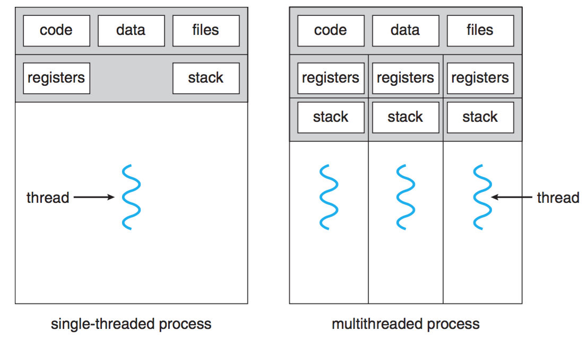

操作系统笔记05 线程管理
进程与线程
- 传统意义上，一个进程只有一个控制线程。在这种情况下进程是①资源分配单位和②调度单位。
- 将上述两个概念分开并允许单个进程包括多个控制线程，得到线程。也就是说，进程用于将资源组合在一起，线程是派发（调度）在CPU上执行的实体。
- 线程是现代操作系统中CPU使用的基本单位。也称为轻量级过程（LWP）。
- 多线程
- 在同一个进程中允许多个线程。
- 进程是资源分配的单位，线程是调度的单位。
- 共享属于同一进程的资源，例如是代码段，数据段，打开的文件和信号等。
- 一个进程中的每个线程都有一个私有线程上下文（包括CPU寄存器集和其他状态信息：?函数参数，变量，返回地址etc）和一个私有堆栈。 
- 进程：①地址空间 ②全局变量 ③打开的文件 ④子进程 ⑤未决(pending)警报 ⑥信号和信号处理程序 ⑦计数信息
- 线程：①程序计数器 ②寄存器 ③堆 ④状态
多线程编程优点
- 响应度高：即使一个或多个线程被阻塞或正在执行冗长的操作，允许其他线程继续响应用户。
- 资源共享：由于同一进程内的线程共享内存和资源，它们可以在不调用内核的情况下相互通信。它能允许一个应用进程在同一地址空间有多个不同的活动进程。
- 经济：创建一个新线程比一个进程花费的时间和资源要少得多。在同一个进程中，线程比上下文切换花费的时间更少。
- 多处理器体系结构的利用：通过为每个CPU分配一个线程可以实现并行，在多CPU上使用多线程加强了并发功能。
线程实现
- 多线程实现的地方：不一定在内核实现
- 用户线程：在用户空间实现。
- 内核线程：在内核实现。
- 通过组合用户线程和内核线程的混合方案。
用户线程
- 它在内核之外用户空间的线程库实现。
- 线程库是为线程创建，调度和管理提供支持的库。
- 就内核而言，它正在管理普通的单线程进程。
- eg. ①Mach C-threads ②Solaris 2 UI-threads
- 优点
- 线程管理和上下文切换不需要陷入内核。这将节省大量的CPU周期。
- 允许每个进程拥有自己的自定义调度算法。
- 缺点
- 执行阻塞系统调用的任何用户级线程都将导致整个进程阻塞。即使其他线程已准备好在进程中运行。
- 在多处理器的系统上，不能调度用户级线程并行执行。
内核线程
- 由操作系统直接支持。内核在内核空间执行线程创建，调度和管理。
- eg. ①Windows NT / XP ②Solaris
- 优点和缺点：和用户线程的相反。
多线程应用程序编程接口
- Pthreads
- Pthreads是指为线程创建和同步定义API的POSIX标准（IEEE 1003.1c）。
- 这是线程行为的规范，而不是实现。
- Win32
- CreateThread，ExitThread和TerminateThread等。
- POSIX Threads for Win32 （http://sources.redhat.com/pthreads-win32）
All articles in this blog are licensed under CC BY-NC-SA 4.0 unless stating additionally.